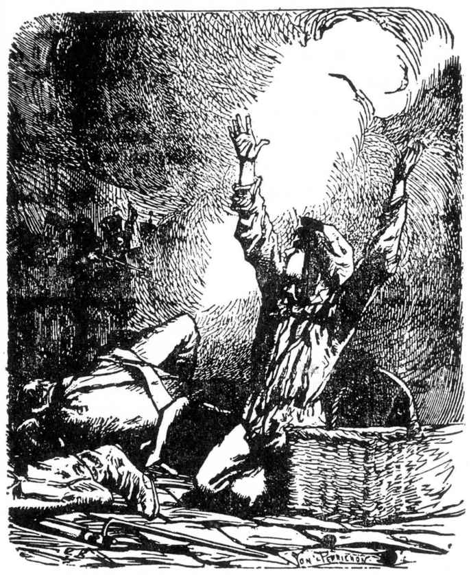

古费拉克坐在安灼拉旁边一块铺路石上，继续辱骂那门大炮，每次随着巨响迸射出被称为霰弹的大量炮弹时，他就用一连串的讽刺话来数落它。
“可怜的老畜生，你大叫大嚷，我替你难受，你吼不响了，这不像是放炮，而是在咳嗽呀。”
他周围的人哄然大笑起来。
古费拉克和博须埃，他们的英雄气概和舒畅心情随着危机与时俱增，就像斯卡隆夫人[1]那样，用开玩笑来代替饮食，因为没有葡萄酒了，他们就向群众灌注欢乐。
博须埃说：“我佩服安灼拉，他那沉着的胆量使我惊叹。他过着孤独的生活，这可能使他有些抑郁。安灼拉因他的伟大事业使他束身鳏居而抱怨，我们这些人，多少有些情妇使我们狂热，也就是说使我们勇敢。一个人能像老虎那样恋爱，至少也会像狮子那样去战斗。这也是对那些给我们颜色看的娘儿们的一种报复。罗兰[2]让人杀死自己，为的是使安杰丽嘉烦恼。我们的大无畏精神是从女人那儿来的。一个没有女人的男人是一支没有撞针的手枪；使男人奋发的正是女人。安灼拉没有女人，他不谈恋爱，可是他胆大无畏。一个人能冷若冰霜而又猛如烈火，这真是不可思议。”
安灼拉似乎不在听人讲话，可是如果有谁在他身旁，就会听到他在喃喃低语：“祖国[3]。”
博须埃还在谈笑，古费拉克突然大叫：
“来了个新玩意儿！”
然后，模仿看门人的通报语调，又加上了一句：
“八磅炮阁下。”
确实，一个新脚色登上了舞台。这是第二门火炮。
炮兵们迅速而使劲地操作着，把这第二尊炮架好在第一尊旁边，准备射击。
这样就出现了收场的局面。
过不多久，这两门炮立刻进入战斗，对准街垒轰击，作战分队和郊区分队用排枪协助作战。
稍远处，人们还听到其他的炮火声。在这两门炮猛力轰击麻厂街棱堡的同时，另外又有两门炮，一门瞄准圣德尼街，另一门对着奥白利屠夫街，把圣美里街垒打得弹痕累累，有如筛孔。这四门炮相互间的回声都凄厉哀怨。
警犬阴郁的吠声也相互呼应。
轰击麻厂街街垒的两门炮，一门使用霰弹，一门发射实心弹。
那门发射实心弹的炮口瞄准得高些，算好要让炮弹击中街垒顶层，把它削平，把铺路石打成碎片，像霰弹一样去击伤那些起义者。
这样轰击的用意是想把棱堡顶上的战士赶下去，迫使他们退进街垒，也就是说总攻已迫在眉睫了。

伽弗洛什之死
当实心弹把战士从街垒顶上轰下来、霰弹又把小酒店窗口的起义者驱散以后，这样突击中队就可以冲进街道而不致遭到射击，甚至不被发觉，就可以像昨晚那样突然爬进棱堡，谁知道呢？也许可以用奇袭的办法拿下街垒。
“必须减轻这两门炮的干扰，”安灼拉说，接着他大声喊道，“向炮兵开火！”
人人都准备好了。沉寂了那么久的街垒又奋起开枪射击了，他们猛烈而欢快地连续发射了七八排枪弹，街上充满了浓烟，教人睁不开眼睛。几分钟过后，透过这有着一道道火焰的烟雾，大家可以隐约看到三分之二的炮兵已经倒在炮轮之下了。依然站着的那几个炮兵强作镇静，仍在使用那些火器，可是火力已经慢了下来。
“好极了，”博须埃向安灼拉说，“很成功！”
安灼拉摇摇头，回答说：
“这样的成功。再过它一刻钟，街垒里便剩不下十颗子弹了。”
伽弗洛什好像听到了这句话。
[1] 斯卡隆夫人（Madame Scarron），路易十四的情妇。
[2] 罗兰，指意大利诗人阿里欧斯托（Arioste，1474—1533）的长诗《疯狂的罗兰》中的主人公，他热恋着安杰丽嘉。
[3] “祖国”，原文是拉丁文“Patria”。